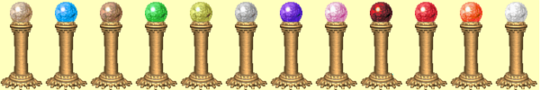

Piedestaly
Na rùzných místech Erathie máte mo¾nost se v krajinì setkat se zvlá¹tním druhem svatyò, které postavám doèasnì propùjèují urèité ochranné vlastnosti. Jedná se o malé sloupky s koulí urèité barvy, které se nazývají piedestaly. Barva koule urèuje, jaké kouzlo se na postavy se¹le. Samotné kouzlo je pak sesláno na velmistrovské úrovni s 5 body v dovednosti (vyjma Zrychlení a Dne Bohù, tam tìch 5 bodù pøíli¹ neodpovídá). Staèí tedy, kdy¾ na piedestal kliknete jen jednou postavou a kouzlo se se¹le na celou dru¾inu. Barevné rozli¹ení jednotlivých piedestalù a kouzlo, které k ní pøíslu¹í je souèástí následující tabulky.
| Barva piedestalu | Seslané kouzlo | Výsledný efekt |
| Bé¾ová | Zrychlení | Kouzlo trvá 2 hodiny |
| Modrá | Odolnost proti vodì | Pøidá 20 bodù k odolnosti, kouzlo trvá 5 hodin |
| Hnìdá | Odolnost proti zemi | Pøidá 20 bodù k odolnosti, kouzlo trvá 5 hodin |
| Zelená | ©tít | Kouzlo trvá 6 hodin |
| Zeleno¾lutá | Odolnost proti vzduchu | Pøidá 20 bodù k odolnosti, kouzlo trvá 5 hodin |
| ©edá | Kamenná kù¾e | Pøidá 10 bodù k Tøídì zbroje, kouzlo trvá 6 hodin |
| Tmavì fialová | Odolnost proti mysli | Pøidá 20 bodù k odolnosti, kouzlo trvá 5 hodin |
| Svìtle fialová | Obìtování | Kouzlo trvá 50 minut |
| Tmavì èervená | Odolnost proti ohni | Pøidá 20 bodù k odolnosti, kouzlo trvá 5 hodin |
| Svìtle èervená | Odolnost proti tìlu | Pøidá 20 bodù k odolnosti, kouzlo trvá 5 hodin |
| Oran¾ová | Hrdinství | Kouzlo trvá 6 hodin |
| Bílá | Den Bohù | Pøidá 35 bodù do v¹ech sedmi statistik |
Poznámka: Pojmenování barev berte mírnì s rezervou, v instalaci hry, kterou jsem pro ovìøení efektù pou¾il je men¹í problém s grafickým zobrazením, tak¾e jsem hodnoty barev opsal z oficiální pøíruèky (dìlá mi to z neznámých pøíèin jen s xp patchem). Nemám tam tak zøetelné rozdíly mezi základní barvou a jejím svìtlým odstínem a u tìch velmi svìtlých mám v¹e bílé. Ka¾dopádnì pøi najetí kurzoru my¹i na piedestal se v oznamovací oblasti okna objeví pøesný název piedestalu, tak¾e se mù¾ete pohodlnì øídit i tím. Kompletní pøehled jednotlivých piedestalù seøazených podle barev v tabulce je vidìt na následujícím obrázku (vytáhl jsem to z datového souboru).
|  |
Výhodnost pou¾ívání piedestalù oceníte zejména v poèátku hry, kdy budou mít va¹e postavy jen malé hodnoty odolností nebo nebudete ovládat pøíslu¹ná klerická kouzla na takto vysoké úrovni. V tomto ohledu je u¾iteèný zejména piedestal Kamenné kù¾e a Hrdinství, který je také nejbì¾nìj¹í. S piedestalem Obìtování se setkáte jen v Eofolu.